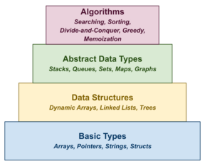

Reading 00: Slack, GitHub, Student Machines
Everyone:
Welcome to CSE 20312 Data Structures, which (as the syllabus states) is a course that "deepens and broadens student exposure to imperative and object-oriented programming and data structures."
What this means is that you will learn how to build basic data structures and abstract data types such as dynamic arrays, linked lists, stacks, queues, sets, maps, trees, and graphs, and you will learn how to apply them in solving interesting programming challenges (that you may or may not face in a technical interview). Additionally, you will learn how to implement problem solving techniques such as searching, sorting, divide-and-conquer, greedy algorithms, and memoization to effectively solve these types of programming challenges.

Course Overview¶
Last semester, most of you took the CSE 20311 Fundamentals of Computing course where you learned how to program in the C language. After playing the Game of Life, generating anagrams, and building fractals, you should be capable of programming in a compiled language using conditional statements, loops, and functions. Moreover, you should be somewhat familiar with strings, arrays, and those crazy pointers.
In this course, we will build on this foundational knowledge by exploring a variety of data structures and abstract data types and then using them along side a number of algorithms to solve programming challenges.
The course can be broken down into the following halves:
-
C: During the first half of the course we will program in C and use this low-level language to build fundamental data structures and abstract data types, along with exploring a few problem solving techniques such as searching, sorting, divide-and-conquer, and memoization.
-
Python: In the second half of the course, we will program in Python and use this high-level language to take advantage of existing data structures to build more complex abstract data types such as graphs and to further practice problem solving techniques such as greedy algorithms, divide-and-conquer, and memoization.
Each week there will be a Reading assignment meant to give you a context and reference into what we will be covering that upcoming week and a corresponding Homework assignment that will provide you an opportunity apply the material in (hopefully) interesting ways. Morever, each Homework assignment will also provide an extra credit opportunity in the form of a LeetCode problem related to the topics covered that week.
Of course, there are two Exams to assess your mastery of the material.
TL;DR¶
For this week, you need to read about using the command line and Git, and then setup your GitHub repository. There is nothing to submit.

Readings¶
The readings for Tuesday, August 22 are:
The focus of the readings is to review the basics of using the Unix shell, which most of you used in CSE 20311 Fundamentals of Computing last semester, and to introduce you to Git, which we will be using throughout the semester.
In addition to reading the above articles, it is recommended that you work through the following tutorials:
-
This is a tutorial on using the command line interface on various operating systems (you should focus on the Unix shell).
-
This is an interactive tutorial on branching in Git.
The Hands-on Imperative¶
To get the most out of your reading, you should be typing commands into a terminal and playing around with the things you reading.
Passively reading will not be as fruitful as actively reading and trying out things you are exploring.
Additional Resources¶
The following are additional resources that you may find useful:
Unix Shell¶
Git¶
Tasks¶
Normally, you would have quiz to complete after each reading. For this initial reading, however, you only need do the following:
-
Join the class Slack channel.
-
Create your own private assignments Git repository on GitHub.
-
Clone your private assignments Git repository to your local computer or a student machine.
Task 1: Slack¶
For communication outside of our classroom, we will be using Slack,
which is a real-time chat platform similar to Discord. Your first task is
to create a ND-CSE Slack account (if you have not done so already)
and join the #cse-20312-fa23 channel:
Slack Channel¶
There is a class mailing list, but most day-to-day communication (including office hours and homework help) should take place on Slack. Therefore, you should check this channel regularly as it is the primary means of communication for the course.
Task 2: GitHub¶
All of your work in this class will be submitted to GitHub using git. Your second task is to setup your GitHub assignments repository by doing the following:
-
Sign-in or create a GitHub account if you do not already have one.
You may associate this account with either your Notre Dame or personal email address. It is up to you.
-
Fork the class assignments repository from the following template:
This will create a private
cse-20312-fa23-assignments-$USERNAMErepository under your own account and linked to the nd-cse-20312-fa23 organization.
GitHub Repository¶
The assignments repository will be used for your individual reading and homework assignments. It must be kept private and only shared with the instructional staff.
Task 3: Student Machines¶
While you are free to use any machine you wish to do your work, the department provides a set of student machines that you can login to and do remote work in an environment crafted for the course. The following steps allow you to clone the assigments you just created to any machine of your choosing.
-
Before you can clone your git repository, you will need to determine which form of authentication, you wish to use with GitHub.
Note, that GitHub has recently shutdown password authentication.To remotely access your repository from the command-line, you have two options:
-
Setup a Personal Access Token: With this method, GitHub will generate an application specific passsword that you can use with HTTPS. As the PAT is a long string of characters, it is recommended that you use it in conjunction with a password manager or keyring.
-
Setup SSH Keys: With this method, you generate a local public and private key pair on your computer and then upload the public key to GitHub. When accessing GitHub from the command-line, you will use the private key to authenticate to the server.
This is the recommended way to setup your repository as it will allow for passwordless access.
Setup SSH Keys¶
Here is a quick tutorial on how to Setup SSH Keys on the student machines (if you have not already):
-
Generate SSH keys if you don't have them yet:
# Accept the defaults, don't make a password if you want to go passwordless $ ssh-keygen -
Copy the contents of
~/.ssh/id_rsa.pubto the SSH Keys section of your GitHub settings page:# Copy and paste the contents of this file into GitHub $ cat ~/.ssh/id_rsa.pub -
Edit/create
~/.ssh/configto use this key with GitHub:# Add the following to your config (replace $NETID with your netid) $ vim ~/.ssh/config Host github.com User git Hostname github.com PreferredAuthentications publickey IdentityFile /escnfs/home/$NETID/.ssh/id_rsa
Once this is done, you should be able to do git operations without a password. You will need to accept the host key the first time by typing in "yes".
Text Editor¶
Any time you see references to
vimin example commands, remember that you can use any text editor such asnanooremacsinstead. -
-
Clone your git repository to your local machine (or the student machines):
# Example of cloning GitHub assignments repository to local or student machine $ git clone git@github.com:nd-cse-20312-fa23/cse-20312-fa23-assignments-$USERNAME.git remote: Enumerating objects: 70, done. remote: Counting objects: 100% (70/70), done. remote: Compressing objects: 100% (13/13), done. Receiving objects: 100% (70/70), 6.25 KiB | 1.56 MiB/s, done. Resolving deltas: 100% (4/4), done. remote: Total 70 (delta 4), reused 70 (delta 4), pack-reused 0 -
Edit the
README.mdfile in your assignments repository such that the Name and NetID fields are completed (i.e. replace "Domer McDomerson" and "dmcdomer"). You should commit your change and then push them to GitHub.# Example on editing README in assignments repository and pushing changes to GitHub $ cd cse-20312-fa23-assignments-$USERNAME # Go into the assignments directory $ vim README.md # Edit the README.md file $ git add README.md # Mark the file for recording $ git commit -m "Update README" # Record the change [master c550fa1] Update README 1 file changed, 2 insertions(+), 2 deletions(-) $ git push # Send your local changes to GitHub
Student Machines¶
As a reminder, students in this class have access to the following student machines:
student05.cse.nd.edustudent10.cse.nd.edustudent11.cse.nd.edustudent12.cse.nd.edustudent13.cse.nd.edu
The following is a video demonstration of the process of cloning your GitHub repository and committing your first change.
Tasks¶
Once you have setup Slack, GitHub, and have a working development environment on your local machine or on a student machine, then you have completed all the necessary tasks for this reading assignment.